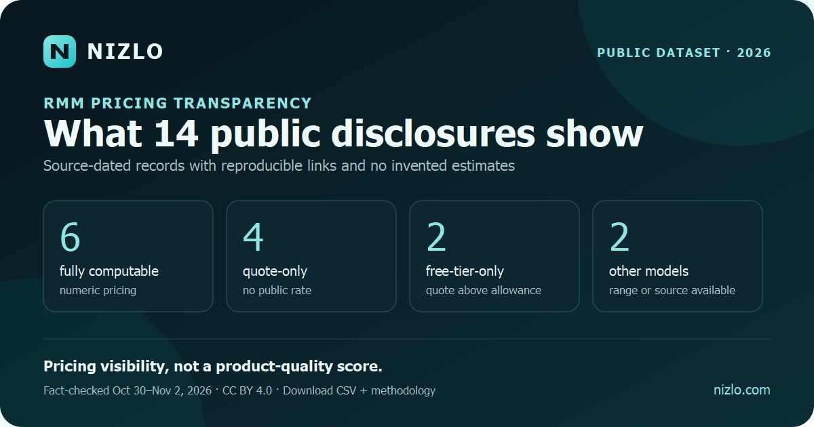

Public dataset · updated November 6, 2026
RMM pricing transparency across 14 products
Six of the fourteen source-dated records publish enough numeric pricing to calculate all four one-technician scenarios in this dataset. Four are quote-only, while the remaining four expose a free tier, source-available license, or limited published range. The comparison leaves unsupported cells blank instead of turning them into estimates.

What the 14 disclosures show
Price visibility is not a product-quality score. Per-device, per-technician, flat, free-tier, source-available, and package-based products can include materially different capabilities and operating costs. These counts describe only what a buyer could reproduce from each vendor's public source on the recorded fact-check date.
Normalized monthly subscription estimates
| Product | Published model | Visibility | 10 endpoints | 50 endpoints | 100 endpoints | 500 endpoints | Source |
|---|---|---|---|---|---|---|---|
| Fathom Free / Core | Free through 50 devices; then per technician | Numeric public | $0 | $0 | $109 | $109 | Vendor pricing |
| MSP360 Community Edition | Free through 50 endpoints | Free tier only | $0 | $0 | Not published | Not published | Vendor pricing |
| Level | First 10 free; then $2/device | Numeric public | $0 | $100 | $200 | $1,000 | Vendor pricing |
| Nizlo Core | Flat plan; unlimited RMM endpoints | Numeric public | $59 | $59 | $59 | $59 | Vendor pricing |
| Atera MSP Pro | Per technician; unlimited devices | Numeric public | $129 | $129 | $129 | $129 | Vendor pricing |
| Syncro Core | Per technician; unlimited endpoints | Numeric public | $129 | $129 | $129 | $129 | Vendor pricing |
| ManageEngine RMM Central | Free through 25 devices; annual device tiers | Numeric public | $0 | $99.58 | $178.75 | $641.25 | Vendor store |
| Action1 | First 200 endpoints free; quote above | Free tier only | $0 | $0 | $0 | Not published | Vendor licensing |
| Tactical RMM | Source-available and self-hosted | Source available | $0 license | $0 license | $0 license | $0 license | Vendor documentation |
| NinjaOne Endpoint Management | Tiered per device; exact quote varies | Range + quote | $37.50 | $187.50 | Not published | Not published | Vendor pricing |
| SuperOps Prime | Per endpoint; 150-endpoint minimum | Quote only | Quote | Quote | Quote | Quote | Vendor pricing |
| ConnectWise RMM | Package-based RMM pricing | Quote only | Quote | Quote | Quote | Quote | Vendor pricing |
| Kaseya VSA 10 | Varies by deployment, volume, and package | Quote only | Quote | Quote | Quote | Quote | Vendor pricing statement |
| Datto RMM | Tailored partner pricing | Quote only | Quote | Quote | Quote | Quote | Vendor pricing |
Level pricing context: use the Level RMM alternative comparison to connect the source-dated Level row to endpoint-count assumptions, platform coverage, patching, automation, remote access, and controlled-pilot questions. Recheck the linked vendor source before relying on any amount.
Method and limits
- Prices and visibility statements were manually checked against the linked vendor pages on the date recorded in each CSV row.
- Estimates assume one technician, U.S. public pricing, no tax, and no optional add-ons.
- When a public annual and month-to-month rate both exist, the table uses the annual-billing monthly equivalent and the CSV preserves the month-to-month alternative.
- Blank CSV cells mean an exact public rate was unavailable for that scenario; they are not zero.
- Source-available software can still incur hosting, operations, support, code-signing, and security-management costs; $0 denotes only the base software license in this comparison.
- The dataset is licensed under CC BY 4.0. Cite the fact-checked date because prices change.
Pricing is only one selection input. Use the RMM software comparison hub to review platform coverage, patching, automation, remote support, integrations, and pilot fit alongside the source-dated price evidence. For small teams, the small-MSP RMM buying guide maps the price structures to fleet size, technician workflow, platform mix, and controlled-pilot criteria.